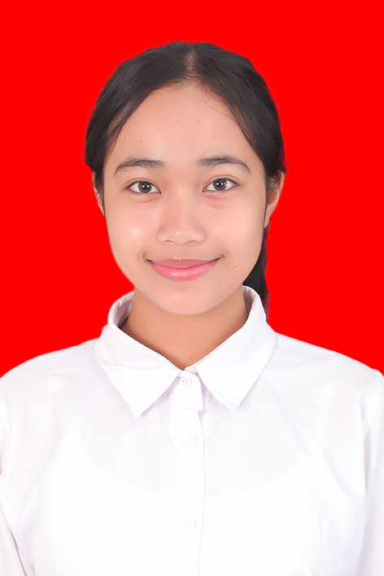

Saya adalah mahasiswa Sistem Informasi yang memiliki ketertarikan pada teknologi, pengembangan web, desain antarmuka, dan pengembangan sistem. Saya senang mempelajari hal-hal baru dan mengembangkan kemampuan melalui berbagai project.
Selamat datang di little space saya, tempat saya berbagi tentang diri, perjalanan, dan hal-hal yang saya sukai.

Saya memiliki ketertarikan pada teknologi, pengembangan web, desain antarmuka, dan pengembangan sistem.
Saya juga senang mempelajari hal-hal baru dan mencoba berbagai hal yang dapat membantu mengembangkan kemampuan saya.
"Tidak perlu menjadi sempurna untuk memulai, tetapi kita perlu memulai untuk menjadi lebih baik"
Tidak harus menunggu sampai merasa benar-benar siap atau mampu untuk mulai mencoba sesuatu. Dari proses mencoba, melakukan kesalahan, dan memperbaikinya, kita dapat terus belajar dan berkembang. Setiap langkah kecil yang dilakukan hari ini dapat menjadi bagian dari perjalanan untuk menjadi lebih baik.
“Every small step is progress."
Program Studi Sistem Informasi
2025 - SekarangTemukan saya melalui : Instagram